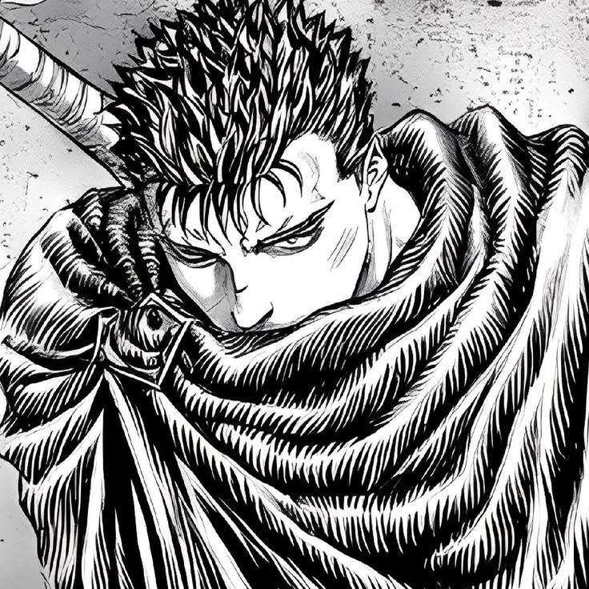
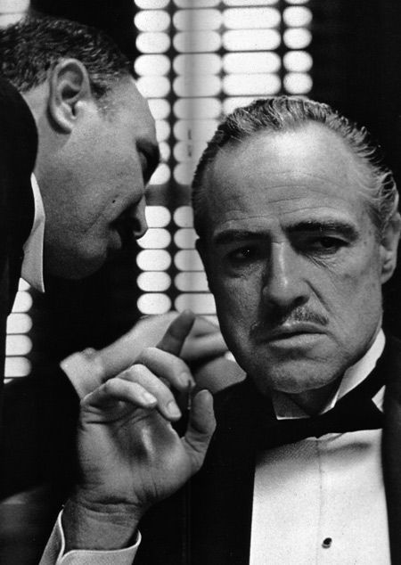

FILE 001
Berserk
Informační web o manze Berserk, jejím příběhu, autorovi a postavách.
Otevřít Berserk ↗[ SYSTEM ONLINE // USER 08 ]
Student webového vývoje
Jmenuji se Jakub. Tvořím weby, které jsou přehledné, funkční a mají vlastní atmosféru.
Prozkoumat projektyUživatelský profil
Jsem student, který se učí vytvářet webové stránky pomocí HTML a CSS. Baví mě temné vizuály, hry a hledání jednoduchých řešení.
Každý projekt je pro mě další mise, při které zlepšuji strukturu kódu, design i responzivitu.
Databáze projektů

FILE 001
Informační web o manze Berserk, jejím příběhu, autorovi a postavách.
Otevřít Berserk ↗FILE 002
Fanouškovská stránka o herní sérii Uncharted a Nathanu Drakeovi.
Otevřít web ↗
FILE 003
Webová stránka o hře Mafia.
Otevřít Mafii ↗Dostupné nástroje
Komunikační kanál
Napiš mi a můžeme společně vytvořit něco zajímavého.
Kontaktovat měObrázky: Unsplash. Validační ikony a kontrola kódu: W3C Validator.
Citace: Při tvorbě portfolia byla použita konverzace s AI asistentem GitHub Copilot ve VS Code. Zdrojový repozitář: Jakub-Halfar/jakub-halfar.github.io.